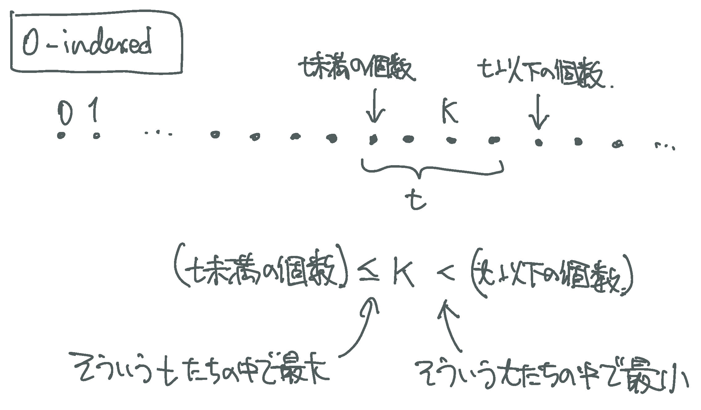

K 番目の要素 (non explicit)
explicit ではない集合 $X$ の，小さい方から $K$ 番目の要素を，二分探索で求める．
1-indexed
先頭を「1番目」の要素とする場合． 以下，$\text{binsearch}(P; a, b)$ を，「区間 $[a, x]$ または $[x, a]$ で $P$ が成り立ち，区間 $[x + 1, b]$ または $[b, x - 1]$ で $P$ が成り立たない」ような $x$ を返すものとする．
$K$ 番目の要素は， 「$X_i \leq t$ となる $i$ が $K$ 個以上となる最小の $t$」であるから， $\text{binsearch}(\lambda t.\; | \{i : X_i \leq t \} | \geq K;\;\; \max(X),\; \min(X) - 1)$ で求められる．
auto check = [&](ll t) -> bool {
return `the number of i such that X[i] <= t' >= K;
};
ll ans = binsearch_i<ll>(check, `max of X', `min of X' - 1);
「$X_i < t$ となる $i$ が $K$ 個未満となる最大の $t$」でもあるから， $\text{binsearch}(\lambda t.\; | \{i : X_i < t \} | < K,\;\; \min(X),\; \max(X) + 1)$ でも求められる．
auto check = [&](ll t) -> bool {
return `the number of i such that X[i] < t' < K;
};
ll ans = binsearch_i<ll>(check, `min of X', `max of X' + 1);
0-indexed
先頭を「0番目」の要素とする場合 ($K$ 番目，というよりは，添字が $K$ である要素，という感じか) の絵は次のようになる．
ベクトル v の，値 t 以下/以上/未満 の要素数
$v$ の要素は整数型とする．
整数型については，常に upper_bound(*, t) == lower_bound(*, t + 1) となるので，
lower_bound だけを使うことにしても良い．
基本は次のこと:
- $v_i < t$ となる $i$ の個数は，
lower_bound(ALL(v), t) - v.begin()である．- $t \leq v_i$ となる $i$ の個数は，
v.end() - lower_bound(ALL(v), t)である．
$v_i \leq t$ や $t < v_i$ については，$v_i < t + 1$ や $t + 1 \leq v_i$ に言い換えれば良い．
keywords: k-th element, binary search, lower_bound, upper_bound